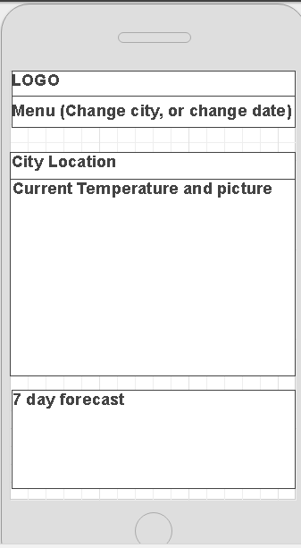
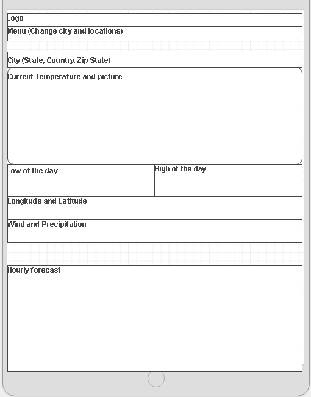
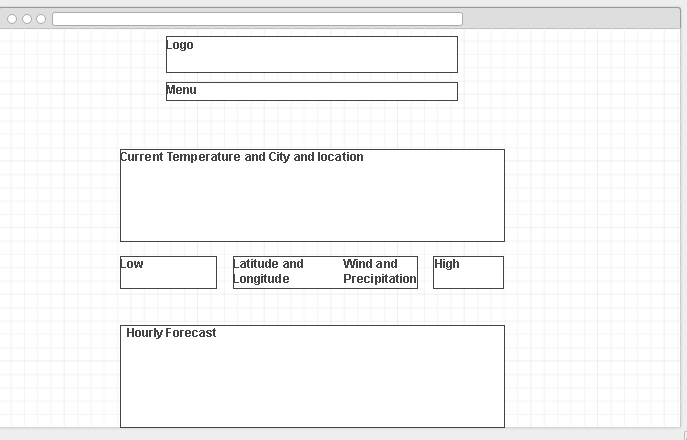

Purpose and Audience
Purpose
The purpose of this site is to show and demonstrate the current conditions of the weather outside for the local cities.
Audience
The audience is those who reside in the three cities of Franklin Idaho, Greenville south Carolina, and Springfield, Illinois . Those who want to check the weather to see what they should wear as well as those who want to plan out their day and the activities for the day. The picture summary is for those who check with little time to decide, they don’t want to go through a bunch of data that doesn’t matter to them.
Persona
Jake is a dad who likes to have fun with his kids. He has work from 8am to around 5pm every weekday. He is married to Lilly and his job is a construction worker. He lives in Greenville and he likes to take his kids and his wife to a park when he can get the time. To make sure what kind of weather he has to look forward to, he checks the weather websites every morning to make sure he is well prepared for all future weather of the day and time. He also checks it before his drive home to make sure he can take his kids to the park before dinner at 630pm.
Website Templates
Mobile Device

Tablet Device

Desktop
